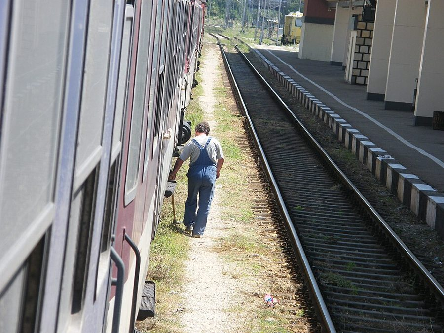
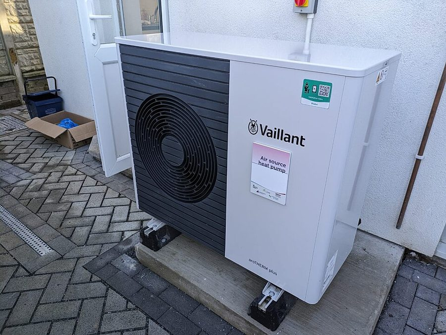

infinite regress
… We have an infinite regress since …
无穷倒退（哲学术语）
本义是解释要无穷地往回追。作者这里描述的其实是绕回原点的循环定义（circular definition）。
第 6 章的后半，也是全书的收尾。06a 收在「每个硬系统都嵌在软系统里」，这一页走进人的系统。工程师要的不是真理，是靠得住的信息；Koestler 的「整子」说明一层层的本事怎样往上涌现。最好读的是 §8：事故为什么常常不是最后动手那个人的错，Reason 的瑞士奶酪和 Turner 的「孵化」各给了一个画面。§9 回答本章开头的问题：多安全才算够安全。最后拿气候和㶲收全书。
第 6 章拆成两页。06a 讲风险从哪来、工程师用安全系数和故障树怎样挡，收在把系统分成硬的（机器、桥）和软的（人和组织），说每个硬系统都嵌在软系统里。这一页走进软系统：信息凭什么算靠得住，层和层怎样接，组织里的隐患怎样攒成事故，然后回答 06a 开头那串问题。全书在这里收尾。
别被带歪：§7 把电阻、电容、电感搬到软系统，说电阻是歧义和冲突、电容是做事本事的积累、电感是适应和创新的能力。作者自己写的是 We can speculate，也承认这套说法很多工程师还没接受。当成启发思考的比方，别当成理论。
飞机失事、高楼起火，人们常把账算在最后动手的那个人头上。作者为什么说那一下往往不是原因？
读的时候带着这几个问题，读完回来对照「检查一下理解」。
原书这一章没有小标题，一口气写下来。下面的节是本站按段落分的：粗体是本站起的节名，后面是档和英文词数；再下面是这一节开头的几个英文词，在 Kindle 里搜它就能跳过去。读完打个勾。
先把这一页用到的几个概念用书外的例子讲一遍。作者拿它们推出什么，读原书时自己看。后面各页用到时会链回这里。
常识里，一句话是真的，就是它和事实对得上，哲学上叫真理的符合论（correspondence theory of truth）。作者接着问：事实又是什么？是显然为真的陈述。拿「真」定义「事实」，又拿「事实」定义「真」，绕回了原点，这是循环定义；书里叫它 infinite regress（无穷倒退），严格说词用得不准。
工程师绕开这道题：不问一条知识是不是终极地真，只问在眼下的范围里靠不靠得住。牛顿定律严格说不真，造桥、造飞机却放心用它，因为东西跑得离光速远着。靠不靠得住，最后由注意义务（duty of care）检验：出了事，法庭看工程师有没有尽到合理的谨慎。
在这一页：§6 从「什么是真」讲到「什么靠得住」，中间借了 mythos 和 logos。那里的 faith 说的是信任，不是宗教。
Arthur Koestler 造的词：一样东西，往下看是整体，往上看是部分，就叫整子。逻辑门是例子：几只晶体管接在一起，才有「与」「或」这样的功能，这是它作为整体的一面；几个门再接成触发器，它又成了零件。作者由此得出：每一层的性质，从下一层部件的相互作用里涌现。
他把这一层层推到人身上：骨骼肌肉、一个人、一个家庭，各有自己的涌现性质。人的系统难，是因为每一层都有意向性（intentionality），也就是目的和打算，层层叠在一起，没法建模。
在这一页：§7 先用逻辑门讲整子，再推到人和家庭；接着把 势差—流的类比搬到软系统。
James Reason 的模型：防线像一片片奶酪，技术设计、报警、自动停机、检查各是一片，每片都有孔。孔会移动、开合，只有碰巧对成一线，危险才一路穿过去成了事故。孔有两种来源：当场的不安全操作，叫主动失效（active failures）；早先的决定埋下、可能多年不显的，叫潜伏的「病原体」（latent pathogens），比如为赶工期偷了工。本站的理解：后一种常常让好几片一起多出孔，模拟器就按这个算。
Barry Turner 说事故会孵化：前提条件一点点攒起来，最后一个小小的触发事件才引爆。气球这个比方是作者打的，不是 Turner 的原话。
在这一页：§8 先讲硬系统怎样找隐患（监测症状、反馈控制），再讲这两个模型。「动手：模拟器」就是这块奶酪。
还原论（reductionism）把东西拆到最小的零件去弄懂，现代科学靠它起家（见 分层）。整体论（holism）看零件怎样合起来，整体有零件没有的性质。作者说的系统思维是两样都要：专业的细节照做，同时有一套能看全局的想法；知和行也同等看重，两边你追我赶，谁也不比谁更根本。合起来求的是协同（synergy）：合在一起的效果大于各干各的之和。
这是 Blockley 的主张，不是学界公认的定义。管理学里 Peter Senge 那一路通常译作「系统思考」，本站统一写系统思维。
在这一页：§9 立论，§10 批专业割裂、拿能量收尾。书末 Glossary 有 systems thinking 一条。
第一定律说能量不灭；第二定律说每倒腾一次，总有一部分再也拿不来做功（熵增）。所以只数能量有几度不够，还要看品质。㶲（读 yòng）就是一份能量在当下的环境里最多能做多少功：电几乎全是㶲；20 ℃ 的热，室外 0 ℃ 时只有约 7% 是㶲。
拿电阻丝把屋子从室外的温度烧到 20 ℃，等于用最高级的能量干最低级的活。热泵用电去「搬」室外的热，在这个温差下，理论上 1 度电最多搬来约 15 度热，实际的到不了，也能换来好几度。隐含能（embodied energy）是另一笔账：楼里的材料和构件运到工地之前，造它们已经花掉的能量。
在这一页：§10 拿建筑能耗收全书：隐含能很少有人算，㶲分析几乎不用。热泵后来怎样，见「今天怎么看」。
先猜：三道防线，每道平时漏 10%。再加第四道，事故概率降为原来的几分之一？如果十天里有一天组织在赶工期，那天每道防线都漏一半，再加第四道又能降多少？
每次有危险冒头，要穿过所有防线才会变成事故。平常的日子里，每道防线漏不漏互不相干；「坏日子」里（比如在赶工期），每一道都一起变差。图上是两种算法下，事故概率随防线道数怎样变。打开页面时是三道防线。
需要浏览器打开脚本才能运行。
各个控件：「防线有几道」是奶酪有几片；「每道平时漏多少」是平常日子里，一次危险穿过这一道的概率；「坏日子占比」是组织带着潜伏问题运转的时间占多少；「坏日子里每道漏多少」是那些日子里每道防线漏的概率。统计栏第一格把防线当成互不相干，只按平常日子的漏法算；第二格把坏日子也算进去；第三格是第二格的事故里有多少出在坏日子；后两格是再加一道防线时，前两格各降为原来的几分之一。图的纵轴是对数刻度：每往下一格，概率小很多倍。
这里的数都是本站定的演示值，书里没有数。模型也是本站的简化：平常日子里各道防线各漏各的，坏日子里每道一起变差，事故概率＝平常日子的占比 × 平时漏的概率连乘 ＋ 坏日子的占比 × 坏日子漏的概率连乘。这不是 Reason 给的公式，他的模型是一个画面，没有给数。
书里点名的人、发明和工程，挑读懂这一页用得上的讲。按在书里出现的顺序排，节号是你在书里哪一节遇到它。
作者讲前现代社会得到真理的两条路：mythos 来自讲故事，要靠信，没法证明到人人都服；logos 讲理、务实，管把事办成。他举的例子是教堂：盖教堂、做教堂里的艺术，是拿 logos 的工具，表达 mythos 里那份情感上的真。这对词参考文献里指向宗教史作家 Karen Armstrong 的一篇文章，第 2 章已用过。他接着说 STEM 的知识有两个麻烦：越分越细，最新的细节只有少数专家懂；而且永远不完整，06a 借 Rumsfeld 讲过这一点。
holon 出自他 1967 年的《机器中的幽灵》（The Ghost in the Machine），书后参考文献列了。Koestler 说这个词是希腊文 holos（整体）加上 -on，后缀取 proton、neutron 那样的「粒子、单元」之意。作者借这个词来想「层」；「每一层的性质从下一层涌现」是作者由此得出的结论，不是 Koestler 的原话。
Senge 1990 年的《第五项修炼》（The Fifth Discipline）把系统思考带进了企业管理，作者在延伸阅读里推荐它。creative tension 是 Senge 的说法：现在在哪，和想去哪，中间的落差推着人和组织往前走。作者把它接到自己的 why = how(who, what, where, when) 上：why（需要、想要）是推动变化的势差，how 是把人、事、地、时的变化串起来的办法。他明说这不是数学公式。
作者说要跟医生学一招：医生看人的症状，工程师看系统的症状。他给的定义其实是病理学的（研究疾病的起因、性质和进程），书里写成了法医病理学，比方不受影响。结构健康监测就是这么做的：在桥和设备上持续测量，赶在损伤变危险之前发现变化，它的公理之一是「所有材料都有内在缺陷」（参考文献列了 Worden 等人 2007 年的论文）。蒸汽铁路时代的敲车轮工拿锤子敲钢轮，声音变了说明有裂纹。Hazop（危险与可操作性分析）是化工设计里广泛使用的、找出和管住隐患的方法。

书里点了四位研究失败的社会科学家：Barry Turner、Nick Pidgeon、Charles Perrow 和 Reason，说他们发现人因失败不只是个人的疏忽和错误，也出自组织和文化，事先、当时都不容易看出来，可能要到事后才明白。Turner 1978 年的《人为灾难》（Man-made Disasters）提出事故有一段「孵化期」，第二版和 Pidgeon 合写，作者在延伸阅读里推荐。参考文献给 Reason 列的是他 1990 年的《人为差错》（Human Error）。Perrow 书里只点了名，他的看法见「本站怎么看」。
作者拿建筑能耗当「需要做得更好」的例子。他引英国皇家工程院（Royal Academy of Engineering，英国工程界的国家级学术机构）2010 年的报告（参考文献列了）：这件事常常没人管全局，工程方案有时拼不到一起。他接着说，隐含能很少有人算，㶲分析几乎没人用。下面这张热泵是今天的东西，书里没讲到它。

读英文原书时值得停一下的词和句：工程里的熟词生义、英式说法、作者的比喻。灰色斜体是原句里连续的几个词，在 Kindle 里搜它就能找到；标「每个字都认识」的，是每个词都眼熟、合起来意思却变了的，最容易读错。点「记下」收进词本。
下面是作者在这一页里的主张，本站按主张之间的逻辑重排，不按原书顺序；每条后面是节号，拿不准就回书里那一节再读一遍。
什么是真，哲学家从柏拉图争到现在，作者不打算解。牛顿定律严格说不真，可只要东西离光速远，造桥造飞机照样靠得住。科学求真，工程求可靠；最后检验工程师的，是他有没有尽到注意义务，出了事由法庭来判。
§6engineers do not look for truth – that is the purpose of science – rather, they look for reliable, dependable information— §6。本站译：工程师不找真理（那是科学的目的），他们找的是可靠、靠得住的信息。
他从 Koestler 的整子推出这一条：门的功能来自晶体管的接法，计数来自门的接法。人、家庭、组织也一层层是整子；软系统难，是因为每层都有人的意图，叠在一起没法建模。他还推想软系统也有势差、流和阻抗，自己标明是推想。
§7硬系统靠监测症状和反馈控制来找隐患；软系统也有隐患，出在组织和文化里，事先不容易看出。Reason 说防线上的孔对成一线才出事，Turner 说前提条件会慢慢攒。作者要每个相关的人都去找那只越胀越大的气球。
§8这是他对本章开头那串问题的回答：能做的是吸取教训、惩罚疏忽、让负责的人合格且真懂，伦敦眼倒下的概率仍不是零。人对风险的感知不简单，容忍的尺度会前后不一致，所以要靠民主社会里知情的讨论。光有科学的真理，保证不了工程安全。
§9But ultimately, ‘safe enough’ is what we tolerate – and what we tolerate may be inconsistent because our perception of risk is not straightforward.— §9。本站译：说到底，「够安全」就是我们容忍的；而我们容忍什么可能前后不一，因为人对风险的感知并不简单。
他主张知与行、还原论与整体论同等看重，求协同，并说这是工程的一种新哲学。气候变化是大考，躲在筒仓里的工程师应付不了跨界的问题。建筑能耗是例子：隐含能少有人算，㶲分析几乎不用。
§9 §10合起来：硬系统讲到最后，难处在人。作者给的不是保证，是一种态度：信息只求在范围内靠得住，隐患要在气球还没胀满时找出来，「够安全」要大家知情地商量。
这一章合起来：开头那句「保证再也不发生」做不到。我们知道的永远不全，知和行之间的缺口就是风险，只能压到可接受。硬办法是安全系数、纵深防御、故障树，太复杂了就分层管；可每个硬系统都嵌在人的系统里，隐患常在组织里孵化。作者的答案是系统思维：专业照深，全局也看，知与行并重。「够安全」最终是社会愿意容忍的尺度。
书 2012 年出版。下面挑出这一页里能被后来的研究或事情检验的说法，分「书里 / 当时 / 今天」几栏，并给一个结论。结论判的是标题里「书里的说法：」后面那一句。全书的这一节汇总在今天怎么看。
读完作者的主张，再看它站不站得住。每一块摆出三样：主流怎么看，作者怎么看，本站的评论。最后一句是本站对这一页的总体判断。
主流看法：哲学里的符合论并不把「事实」定义成「真的陈述」：Russell 和早期的 Wittgenstein 把事实当成世界上的状况，句子对得上它才真，所以不绕圈（斯坦福哲学百科「真理符合论」一条有综述）。科学哲学也通常把牛顿力学看成低速、弱引力范围里极准的近似。统计学家 George Box 那句常被引的话说得更直白：所有模型都是错的，但有些有用。
作者的看法：工程师不找真理，那是科学的事；他们找可靠、靠得住的信息，最终由注意义务、由法庭检验。§6
本站的评论：作者绕的那个圈是他自己画的，「无穷倒退」也是用错了词。但他要落的那一点很站得住，也合程序员的经验：没人证明过一个库「真的」没有 bug，我们看的是它在哪些条件下用过、测过，出了事谁负责。把「真」换成「在给定范围里靠得住」，是这一页最有用的一招。
主流看法：Charles Perrow 在《正常事故》（1984）里说，交互复杂、耦合紧密的系统里，几个小故障会以没人料到的方式搅在一起，事故是这种系统的「正常」产物，再警觉也防不完。后来还有一路，如 Erik Hollnagel 的「安全-II」，主张少盯着出错，多研究平常为什么做对了。Reason 的奶酪也被批评太线性、像漫画；Larouzée 和 Le Coze 2020 年的综述认为它仍站得住，高风险行业还在广泛使用。
作者的看法：每个相关的人都有责任去找越来越胀的气球，认出那件迟早要出的事，把问题管掉。§8
本站的评论：书里自己就有这层张力：§8 先说组织里的隐患事先、当时都不容易看出，可能要到事后才明白，接着又要每个人都去发现它。两句都对，前一句是难处，后一句是该做的事。作者点了 Perrow 的名，没讲他比作者悲观得多的结论。读这一节时可以把两人放在一起想：有些气球能早看见，有些系统本身就在不停地吹气。
主流看法：把社会系统当成存量和流来建模，早有一门成熟的学问：MIT 的 Jay Forrester 创立的系统动力学，Senge 的《第五项修炼》就建在它上面，模型要写成方程、拿数据校准。另一路是 Peter Checkland 的软系统方法论：人的问题里，各方对「问题是什么」看法都不同，模型只是帮大家讨论的工具，不去测量什么流。
作者的看法：软系统里 why 是推动变化的势差；可以推想阻抗也和硬系统相似：电阻是歧义和冲突造成的损耗，电容是做事本事的积累，电感是适应和创新的能力。§7
本站的评论：这一段是推想，作者自己也这么标。电阻对歧义和冲突还说得通；电感的本义是抗拒电流的变化，拿来比「适应和创新」，方向反倒拧了。它既不像系统动力学那样能算，也不像 Checkland 那样讲清了怎么用。当作提醒自己看全局的口诀可以，别当成理论。
本站的总体看法：这一页最值得带走的是 §8 和 §9：事故在组织里孵化、触发事件不是原因、「够安全」是社会容忍的尺度，到今天都站得住，737 MAX 和格伦费尔就是例子。§6 的论证绕了点路，结论好用；§7 软系统的阻抗只是比方。
先在心里答，再点开。答错的那题，回书里把对应那一节再读一遍。
工程师问的是在用的范围里靠不靠得住。东西跑得离光速远，牛顿定律足够准。最后检验的是工程师有没有尽到注意义务。
拿「事实」定义「真」，又拿「真」定义「事实」，绕回原点，是循环定义；书里叫它 infinite regress。作者说日常里这不要紧，工程要对人命负责，才得多想一步。
对下，它的与、或功能从几只晶体管的接法里涌现，它是整体；对上，几个门接成触发器，它又是部分。
一是主动失效，个人当场的不安全操作；二是潜伏的「病原体」，早先的决定埋下的，比如赶工期偷了工，可能多年不显，孔对上时才被发现。
针是触发事件。真正的问题是一步步攒起来的前提条件，也就是气球里的气压；气球没吹起来时扎一下，只会漏气，不会炸。
风险消除不了；能做的是吸取教训、惩罚疏忽、让负责的人合格且真懂。「够安全」就是我们容忍的，而容忍的尺度可能前后不一致。
电几乎全是能做功的高品位能量，把屋子烧到 20 ℃ 只要低品位的热，直接烧等于把电降格用掉。概念块补的一句：热泵是拿电去搬热，不在此列。
用一句话说这一页：
想一想：你经历过或听说过的一次线上事故，最后被当成原因的是哪一下操作？往前倒，那只气球是从什么时候开始吹的？
读过又忘了，从这里想起来。挑的是这一页最值得记住的例子和说法，不按原书顺序；每条后面是节号，想细看就回书里那一节。全书各页的这一节都收在全书回顾。
一句话：工程要的是靠得住的信息；层层性质往上涌现；事故在组织里孵化，针不是原因；「够安全」是我们容忍的尺度。
牛顿定律严格说不真，造桥照样用：工程师问的是在这个范围里靠不靠得住。最后检验的是注意义务，出了事由法庭判。
§6Koestler 的词。逻辑门由晶体管组成，又组成触发器；每一层的本事，从下一层的接法里涌现。
§7防线像带孔的奶酪片，孔会移动、开合，对成一线才出事。孔来自当场的失误，也来自赶工期这类早先埋下的隐患。
§8作者给 Turner 打的比方：隐患像往气球里吹气，胀满了，一根针一扎就炸。被当成原因的那根针，其实不是原因。
§8风险消除不了，伦敦眼倒下的概率也不是零。能做的是吸取教训、让负责的人真懂，再让社会知情地商量尺度。
§9能量不灭，但每倒腾一次，都有一部分再也做不了功。拿高品位的电直接烧暖屋子，是降格使用。
§10